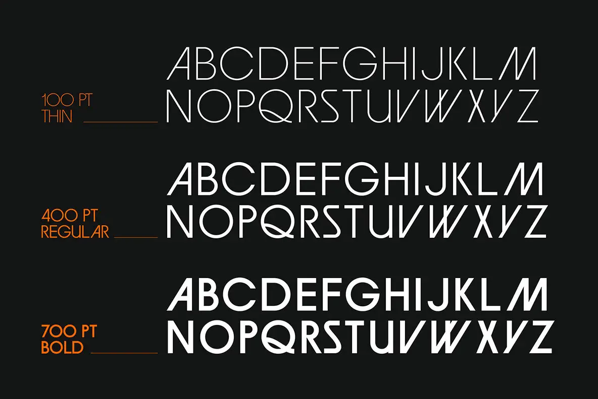

The reference artwork is shown beside a live HTML/CSS reconstruction. Display copy remains editable, and the original source wording is not baked into the new composition.
Three alphabet rows and warm weight labels preserve the reference hierarchy with separate weight controls.

The reference artwork is shown beside a live HTML/CSS reconstruction. Display copy remains editable, and the original source wording is not baked into the new composition.